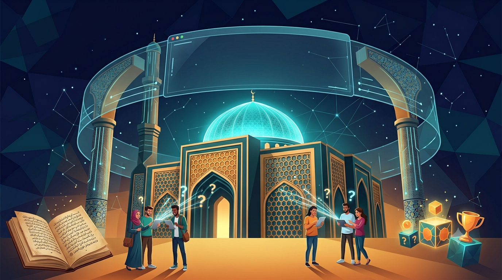

شارك في التحديات اليومية، اختر مستوى الصعوبة، سجل نقاط فريقك وتصدر اللعبة!
النقاط التي جمعتموها محفوظة ومستمرة معكم عبر المستويات!
أسئلة عامة ومباشرة
تحتاج لبعض التركيز
لأصحاب المعرفة العميقة
تفسير وفضائل السور
تحديات لطائف البقرة
الخيارات مخفية للسماح للفريق بالتفكير أولاً دون مساعدة!
إجابة صحيحة! لمن تود تسجيل نقاط هذا السؤال؟